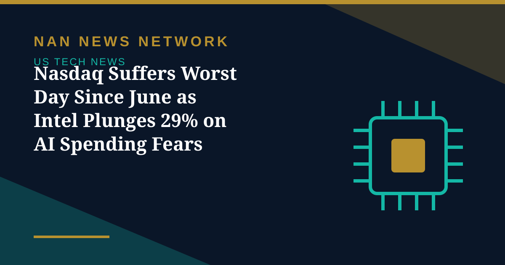

Nasdaq Suffers Worst Day Since June as Intel Plunges 29% on AI Spending Fears

Wall Street ended October on a weak note on Friday, with the Nasdaq Composite recording its biggest daily percentage decline since June as investors reassessed the scale of artificial intelligence spending by major technology companies, Reuters reported on October 31.
Intel leads a broad chip selloff
Intel shares plunged 28.6% after its weak fourth-quarter guidance, while Reddit fell about 29% and memory-chip maker SanDisk dropped 13%. Nvidia fell 4.2% and AMD about 10.9%, and the broader semiconductor index declined 7.2%, taking its monthly losses to more than 15%. Server makers Dell and HP also came under pressure, falling 10.8% and 9.6% respectively.
The four so-called hyperscalers — Microsoft, Meta, Amazon and Alphabet — fell 1% to 2% on Friday after significant declines earlier in the week. Capital Economics noted they have been responsible for more than a third of all capital spending by current S&P 500 constituents over the past 12 months, a share that looks likely to rise further, a prospect investors are struggling with.
A correction in the making
The Nasdaq Composite is now down 7.8% from its record closing high reached on October 6, and the Nasdaq 100 fell 3.5% on Friday, putting it on the brink of a 10% correction from its recent high. October was the technology sector's worst month since March 2025. As one strategist told Reuters, the week has been very much about the future of AI and whether there will be a positive return on investment — and if so, how quickly.
Sources: Reuters via Moneycontrol, Bilyonaryo, Indian Economic Observer, October 31, 2026
More on US Tech News
- AI Giants Pledge a Single 'No Scraping' Tool for Publishers After Years of Complaints
- Amazon's AWS Jumps 39% to $46 Billion, but a $42.4 Billion Cash Outflow Sinks the Stock
- Intel Plunges About 25% as Weak Fourth-Quarter Guidance Overshadows a Third-Quarter Beat
- Microsoft Rises, Alphabet Falls: Free Cash Flow Becomes the AI Earnings Scorecard
- Nvidia Puts $3 Billion Into Meta as AI Partnership Deepens — and 'Circular' Worries Grow
- SK Hynix Profit Jumps More Than Sevenfold as AI Rally Faces Earnings Test
- Judge Orders OpenAI to Disclose Apple Hiring Records in Talent Dispute
- Apple Unveils M6 MacBook Pro and iMac With Faster On-Device AI
- OpenAI Launches GPT-6.1 Terra With Lower API Prices
- Musk Says SpaceX Closed $40 Billion in GPU Debt and Warns of a Neocloud Shakeout
- AI Inference Prices Have Fallen as Much as 80 Percent Since June, Analysis Finds
- White House Names Jay Clayton as AI Czar to Lead 'Super Intelligence Force'
- SpaceX Q3 2026: $14.6 Billion Revenue as Starship Flight 15 Targets a Dual-Stage Catch
- US Orders DeepSeek Stripped From Federal Civilian Systems